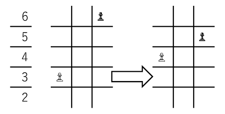
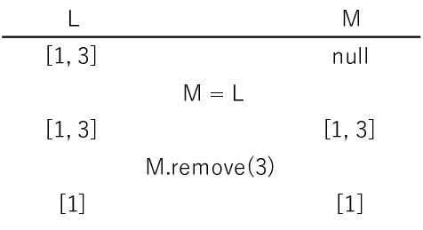

Stage 4-1 駒をうごかす〜判定編〜
さあ、やっとチェスっぽくなってきましたね。今回使うファイルは board.py だけです。しかもすべて Board クラスの中だけです。なんでこんなにクラスでっかくするんだって思うかもしれませんが、ゲームをデザインしたときその威力に気づくことになるでしょう。
目次
4-1-1 前段階
BOARDprint 直下に motionjudge というメソッドがありますよね。これで「駒が正しい動きをしているか」を判定しています。正しければ True を、間違っていれば False を返します。引数は
frFILE→ 元の file 番号frRANK→ 元の rank 番号toFILE→ 先の file 番号toRANK→ 先の rank 番号promote→ プロモーションで成り上がる駒の番号
を表しています。移動元と移動先の座標およびプロモーションの情報ですね。motionjudge 関数だけでなく、ありとあらゆる場面でこの形をガンガン使いますので、今のうちに慣れてください。from と to と考えれば難しいことはないと思いますが。
最初の if 文は「座標がちゃんと盤面の中におさまっているか」を判定しています。8 マス × 8 マスの盤面のインデックスに 15 とか入ったらマズいでしょ。ここで引っかかったらどう考えても間違った動きなので False をリターンします。
次に、動かそうとしているプレーヤーはだれか、その駒の種類は何かを取得しておきます。
そのあとの if は「自分の駒が置いてる場所に動かそうとした」場合です。当然それはアウトですから、 False を返します。
今度は動かそうとしているマス ([frFILE][frRANK]) に何も置いていない EMPTY の場合です。当然動かすものがないんですから、 False を返さなければいけません。
ここまででとりあえず「駒の動きを見るまでもなく」アウトな動かし方をひととおり排除できました。次は1種類ずつ駒の動きを確認していきます。
4-1-2 ポーン
ポーンは実に多彩な動きをみせてくれます。しかも白黒あわせて 16 個もありますからね、戦いにおいてもかなり重要な駒になるわけですよ。ええ、ですから、基本の動きに加えて例外などなどルールの量がめちゃめちゃ多い。まったく
無駄なもんばっか作りおって。
ということで、ルール自体は他の方のサイトに任せるとして、我々はさっさとコーディング進めてしまいましょう。
まず基本となる動きです。ポーンは様々ルールはあれど、やはりいちばんよく使うのは「一歩前進」ですね。この動きができる条件は、
- 横に動かない
- 盤面の外に出ない
- 前のマスにどの駒も置かれていない
でした。そして、いちばん相手側、盤面の端まで来たら必ずクイーン・ルーク・ナイト・ビショップのいずれかにプロモーションしなければいけません。これを早速コーディングしていきます。
ポーンの場合の最上部の if 文は「端についたのにプロモーションしてないロクデナシをしょっぴく」という意味です。プレーヤーの色で場合分けする必要はありません。白は第 1 rank に、黒は第 8 rank にポーンを置くことがありませんから。
次が基本動作です。ここで True を返す条件は、
- file が同じ
- rank の移動が適切
- 移動先に何もない
です。ここで私のコードを見て疑問が湧くかもしれません。「なんで rank の差をとって player と比較してんだ？」実はこれ、ちょっとチートっぽい計算なんですよ。白の場合で考えてみましょう。白がポーンを進めるとき、 rank の番号が 1 つ増えますから、toRANK - frRANK = 1 となります。一方で、config.py で WHITE = 1 と定義していますよね。だからこのように rank の移動が適切か確かめています。黒の場合は rank の番号が 1 つ減りますし BLACK = -1 と定義しているので、同じように確認が取れます。嘘だと思います？いいですよご覧なさいよ。
次の elif 文は「相手の駒をとる通常の場合」について確かめています。True を返す条件は、
- ひとつ隣の file
- (各方からみて)ひとつ前の rank
です。ひとつ隣とは file の差が 1 か -1 かであることを意味しますから、絶対値を取れば両方 1 として処理できますね。
次いで最初の 2 マス移動です。初めて動かすポーンにかぎり発動するこの条件では、白なら第 2 rank, 黒なら第 7 rank にあるポーンを動かした時のみ player * 2 のぶん rank が変化します。これはプロモーションが必要かのチェックとは違ってプレーヤーの色で場合分けが必要になりますよ。端からひとつ前はどちらのポーンもいる可能性があるので。それともうひとつ、移動先だけでなく通過するマスにもほかの駒があってはいけないことも忘れてはいけません。
ポーンの最後には厄介なアンパッサンが残っています。なんでこんなルール作りおったんでしょうね。まったく
余計なことしてくれやがって。
アンパッサンの条件をもう一度確認しましょう。
- 相手がポーンを 2 マス動かした直後に
- 相手から見てそのポーンの手前のマスに
- どの駒も置かれていないとき
- そのマスに
- そのポーンのすぐ隣にある自分のポーンを動かして
- 相手のポーンをとることができる
とてつもないルールですよね。これコード見た方がわかるんじゃねえかっていう。さて、ここまで解説した中では検証できないルールがひとつあって、それが「相手が 2 マスポーンを動かした直後」ってとこですよね。しかも相手がポーンを動かした後、動かしたもの以外のポーンではアンパッサンできないので、どれが「その」ポーンか記録しておかなければいけません。
そこで一度 Board のコンストラクタ __init__ に戻りましょうか。board を定義した直後に self.ep_target ってのがあるでしょう。これに記録してくんです。何をって、相手が 2 マス動かしたポーンの移動先の座標ですよ。例えば黒が d7 から d5 にポーンを動かしたら ep_target = [d - 1, 5 - 1] って記録しとくんです。2 マス動かさなかったら？いいとこ気がつきましたね。みなさま、お待たせいたしました。config.py で OVERSIZE ってのを定義したじゃないですか。ついにこれを使う時がきました。このアホみたいにバカでかい数をあえて使うことで、「これってもしかしてバグるんじゃないかな」という不安を一切許さない、とても読みやすいコードに仕上がるわけです。その証拠にコンストラクタ __init__ の引数にデフォルトが設定してあるでしょう？ input_target=[OVERSIZE, OVERSIZE] って。基本的にこの超絶オーバーなリストを使うのですが、たまにポーンを２マス前に進めた時は ep_target をいじくって、という仕組みなんです。ではコーディングに移りましょう。2 マス動かした直後のポーンの座標が ep_target なわけですから、アンパッサンで True をリターンする条件は、
- ep_target のとなりに移動元
- ep_target の奥(rank が frRANK + player)に移動先
- 移動先が EMPTY
ですね。それをコードにすると私のコードのようなものになります。
さあ、これでポーンの正規の動きに関するコーディングは全て終わりました。自称ポーンでほかの動きしてるのは全て False にしてしまいましょう。長かったですね。これがあと 5 種類も続くと考えると気が遠くなりそうですが、ご安心ください。こんなに面倒なのはポーンが最後(のはず)です。ここを乗り切った皆さんなら必ずすべての駒についてコーディング達成できます。
4-1-3 ルーク
みなさん、ルークです。こいつについては「正しい動きについて True を返す」ポーン作戦より、「間違った動きに False を突きつける」戦法がいいでしょう。なぜそんなこというかって？コード見てみましょうか。
まず第一に、タテヨコバビューン(1 マスもバビューン)と動いていない場合、要はナナメに動いている場合は何がなんでも False ですな。タテなら file の値が、ヨコなら rank の値が変わりませんので、「両方とも変わってるわ」って時は遠慮なく False を突きつけてください。
ところで、ここで False が突きつけられなかった場合でも、すべて True とはできません。ルークは途中にある駒を飛び越えることができませんから。ただ、ビショップやクイーンでも同じことを考えないといけませんから、この場合の実装は後回しにしておきましょう。
4-1-4 ナイト
ナイトほど変な動きをする駒はありません。これはコーディングが難しそうだと思うのも無理ありません。ですが、file と rank を考えてみるとそう難しいことでもないですよ。True を返す条件は、
- rank の差が 1, file の差が 2
- rank の差が 2, file の差が 1
のいずれかであることがわかるかと思います。これ以外はすべからく False です。
4-1-5 ビショップ
ビショップはルークと同じように考えればいいでしょう。ナナメは「file が 1 増えれば rank は 1 減る」「file が 1 減ると rank が 1 減る」といった挙動を示すので、True を返す条件は「file の差と rank の差が等しい」と表せます。駒を飛び越える場合の処理はルークと一緒にあとでやりましょう。
4-1-6 クイーン
ルークでもビショップでも許されない動きは女王様でも許されません。これを念頭にコーディングして、駒を飛び越える場合をあとで処理すれば問題ありません。
4-1-7 キング
「キングなんてタテヨコナナメに 1 マスしか動かねーんだから書くことねーだろ」って思ってます？困りますねえ。いや、半分はあたりなんですけど。ではその半分を先に片付けてしまいましょう。
基本動作の場合は file と rank の差が 1 以下であれば構いません。「以下」ですよ「以下」これがないとナナメしかいけませんから。ほら、タテに進むとき file の差は 0 じゃないですか。ということで
if abs(...) <= 1 ...
return True
とコーディングします。
さて、簡単な方が終わりましたから厄介者をどうにかしましょう。何すんだって？キャスリングですよ。こいつは基本的にキングの動きとて扱うのがいちばん楽ですからね。ルークで考えると「あっ、今キング動かしたくないのに」ってなったりして面倒ですから。キャスリングの条件をもう一度確認してみましょうか。
- キングと動かすルークを一度も動かしたことがない
- キングと動かすルークの間に何もない
- 移動前後、移動中にキングがチェックされない
いやいや、面倒ですね。私もこれ書いてる間に自分のコードが条件全部満たしてないことに気がついて慌てたくらいですよ。
まず、キングの普通の動きを確認した後に rank という新しい変数を設定していますね。これはあとで条件分岐するときに役に立ちます。
次に出てくる条件文の中に初出の変数があると思います。castl_q です。ではこれを定義しているコンストラクタ __init__ にとんでみましょう。
コンストラクタ中の self.castl_q, self.castl_k はそれぞれクイーンサイド、キングサイドにキャスリングできるプレーヤーの番号を格納するリストです。初期値はコンストラクタ __init__ の引数にあるとおり両プレーヤーを格納します。定義の際に copy.deepcopy という関数を使っているのは、新しくリストを作成するためです。仮にこの作業を怠って self.castl_k = input_k としたとしましょう。この場合、デフォルトを使用するなら問題ありませんけれども、初期化の際に何かリストを代入すると問題が生じます。
パイソンにおいてリスト型の変数を代入するというのは、変数の値ではなく変数を格納しているコンピューター上の部屋番号(参照)を渡しているんです。まあ正確にいうと、「ミュータブルの変数は参照を渡し、イミュータブルの変数は値を渡す」という言い方をするんですが。例えば int 型や str 型はイミュータブルなので深いこと考えずに何でもかんでもつっこみゃ値が新しい変数に代入されるのでいいんですが、リストとなるとそうはいかないんですね。リストの場合、代入はすべて参照渡しです。例えば L = [1, 3] というリストについて M = L と代入した場合、M に操作を加えて、例えば 3 を削除したら、L でも 3 が削除されてしまうんですわ、これが。
じゃあ L の中身は残しておきたいと思ったときどうすればいいか。そのとき使うのが copy.deepcopy です。まあ 1 次元リストなら copy.copy でもいいんですが、こっちさえ覚えとけばってのは deepcopy の方ですね。M = copy.deepcopy(L) をやっとけば、M をいじっても L にはなんの支障もありません。ね、便利でしょ。
今回のコンストラクタにおける宣言は、代入したリストの値を残しつつ新しくできたインスタンス(クラスを実体化したオブジェクト)でリストの中身をいじれるようにするために、必ず deepcopy をしておかなければいけません。
キャスリングに戻りましょう。キャスリングにはキングサイドとクイーンサイドがあります。文字通りキングサイドはキング側のルークと、クイーンサイドはクイーン側のルークとキャスリングします。私のコードではまずクイーンサイドを確認していますね。クイーンサイドのキャスリングをする条件は、
- player が castl_q にいる
- キングの移動先が [c - 1][rank]
- [b - 1][rank], [c - 1][rank], [d - 1][rank] がすべて EMPTY
- [c - 1][rank], [d - 1][rank], [e - 1][rank] に相手の駒がこない
の 4 つです。こと 4 つ目はちょいと if 文内で片付けるには複雑ですから、先に前 3 つで条件を確認しています。
3 つの条件を突破したものにかぎり４つ目の条件の確認に取り掛かります。4 つ目の条件はアルゴリズム的に書くと
- 盤面上すべてのマスを調べる
- もしそのマスにいるのが相手の駒ならば
- その相手の駒が [c - 1][rank], [d - 1][rank], [e - 1][rank] のどれかに動くことができるなら False を返す
- すべてのマスについてクリア(相手はチェックできない)ならば True を返す
となります。私のコードでは ran が rank の番号を、 fil が file の番号を表しています(もちろん 0 スタートです)。条件の 2 つ目はいらないと思うかもしれませんが必ず入れてください。もし自分の駒も許した場合、当然 [e - 1][rank] には 4-1-1 で確認した通り行くことはできませんが、他の 2 マスにはいけます。そのせいで自分の駒にチェックされていると認識され、本来キャスリングできるのに False が返される恐れがあります。
キングサイドについても全く同様に確認できます。こちらはキャスリング可能なプレーヤーが castl_k に格納されていること、キングの行先が [g - 1][rank] になることに注意してください。
ここまで放置されたら、王様とはいえ動くことはは許されません。すべて False をリターンしてしまいましょう。
これにて駒ごとの確認はすべて終わりです。長かったですね。最後に「piece の値がこれ以外の場合」をのぞいておきましょう。ポーンからキングまですべて場合分けしてんのに、まだ引っかからないやつはろくなもんじゃありません。
4-1-8 途中の駒の除外
キングまで終わったからって気を緩めてはいけません。さっきルークやビショップなど、放置したまんまでしょう。ケリをつけます。
まず私のコードではリスト direction を定義していますね。文字通り駒の進む方向を表しています。この方向は [+1, +1], [-1, 0], ... といった具合に、「一歩先のマスに行くとき加える値」を表しています。白側からみて、左に行くのであれば [-1, 0], 右後ろへは [+1, -1] といったように。これは file, rank それぞれに対し、差をとって絶対値を１にする、つまり PosNeg(to - fr) とすればできますね。
その次は focused です。これは「注目しているマス」を表しています。まだ focused が移動先までたどり着いていないのに board[focused[FILE]][focused[RANK]] が EMPTY でなければ、入力された動きは途中でその駒にでくわしたことになりますから False をリターンします。それが while 文の中身となるわけです。先ほども申しました通り、次のマスへ行くには direction を focused の各座標に加えればよいので、while の中では駒がないか確認し、focused を動かし、という作業を繰り返していますね。また私は非常に用心深いですから、下手して focused が盤面を突き破ったときにエラーを吐かないように(吐かないのもどうかと思いますが) InSize で確認を入れています。
while ループをすべてクリアしたら、もう確認することはありませんから、True を返して問題ないでしょう。お疲れ様でした。これにて駒の動きの判定は終了です。
次回予告
今回は motionjudge メソッドだけしかできませんでしたが、次回は実際に駒を動かします。一番面倒(なはず)なこの motionjudge メソッドを乗り越えた皆さんなら、この先の面倒な機能も問題なく実装できるでしょう。